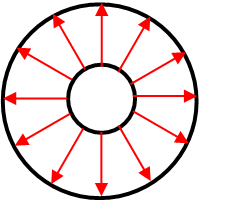
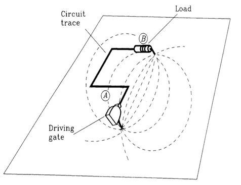
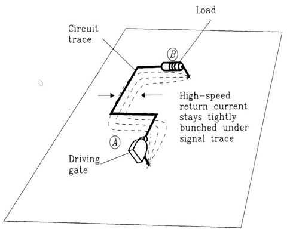

Signal integrity of propagating signals
The basic mode of electro-magnetic propagation in all DUT board related hardware components and media is the Transverse Electric and Magnetic mode, or in short, TEM-mode.
RF signals are propagated to the DUT board via RF coaxial cables:

The leakage level in RF coaxial cables is usually very low, typically well under -100 dBc. The RF signals are very well contained by the coaxial outer conductor structure (see also Leakage and crosstalk of RF signals).
Once inside the DUT board, the integrity of the signal needs to be protected and propagation must be kept in TEM-mode at all time. This applies to both the horizontal propagation in the layers and to the vertical propagation in the various vias.
Horizontal propagation
Horizontal propagation for low frequency signals
At DC current, electrons (actually: electron voids) are traveling all inside the wire. This is modeled adequately by using the concentrated parameter propagation method. Once the frequency of the signal increases, propagation is more than just traveling of electron voids inside the wire. Core propagation mode is electro-magnetic (EM) wave.
At low frequencies, current follows the path of least resistance. That means, the current can be easily contained within the boundaries of the circuit trace.
Horizontal propagation for increased frequency signals
An increased frequency signal would travel, or "leak", freely to everywhere within the available 3-dimensional space:

This propagation of increased frequency signals is contained by using a surrounding pair of grounding layers in case of the horizontal signal path, and by using grounding vias around signal vias in case of the vertical path.
Horizontal propagation for high frequency signals
At high frequencies you must make sure that the signal's EM wave is "tucked" tightly under or otherwise kept nearby the signal path vicinity. Therefore, at high frequencies we talk no longer about ground and grounding pins, but about "return path" instead:

At high frequencies, current follows the path of least inductance, or in more general terms, the path of least impedance!
Vertical propagation
Ideally, as the overall signal path transits from one media into another media (such as from microstrip lines in the horizontal path into vertical RF interlayer vias) the signal must be well conserved in the TEM mode with minimum disturbance or reflections.
For horizontal propagation, a return path layer (ground layer) at one side of the signal layer in microstrip configuration, or two layers at either side in stripline configuration, guarantee the integrity of the RF signal.
Similarly, during vertical signal travel the ground vias provide the return path and guarantee the necessary Fencing and shielding around the signal via. In this way, the Transverse Electric and Magnetic (TEM) propagation is well contained.
If ground vias are missing on one side of the signal via, Leakage and crosstalk of RF signals will occur in the direction(s) where ground via or vias are not placed.
Functional changes
- Introduced in SmarTest 7.2.0